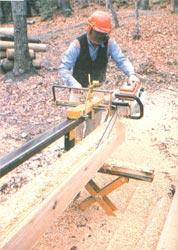

Over a year ago, the manufacturers of the Woodland Bumblebee - a chain-saw lumber mill - stopped by MOTHER's Eco-Village to demonstrate their product. And although a lot of us were initially skeptical of the mill's potential, we soon found that it gave a very impressive performance.
The portable unit is designed to take a 30- to 36-inch bar mounted on a 5-cubic-inch, or bigger, chain saw. It features easy-to-set adjustments for a wide range of cuts . . . allowing the operator to mill logs up to 28 inches wide and 18 feet long, and to achieve precision cuts as thin as 1/4 inch! It can also shape house logs, corral posts, shingles, beams, and materials for fine furniture . . . in fact, just about any custom lumber you might need. And even the "waste" it produces isn't wasted: The chips and sawdust make a fine garden mulch.
Additionally, this one-person mill is compact enough to be transported from one site to another in a pickup truck. Therefore, should its owner encounter a log that's too big to haul to the mill, he or she can simply haul the mill to the log! Once there, the Bumblebee's mechanical scissor jacks permit the operator to raise the felled tree to the saw with very little manhandling.
Another feature that adds to the Bumblebee's versatility is its "universal" chainsaw mount. However, with a number of different brands and models of chain saws on the market today, an individual board-maker may well find that it takes a little filing, drilling, and fitting to adapt a particular saw to the mill. (A prospective customer should be aware, too, that the chain must be specially sharpened, to an angle of 10° or less, for ripping - as opposed to the crosscutting needed for firewood - purposes.)
A PERSONAL TESTIMONY
Not only have our Eco-Village workers seen that the 'bee is a handy device to have around, but Steve Keull - who heads up MOM's photography department - bought a unit of his own for use in construction projects on his farm. And after living with the sawmill for a year (using it to cut some of the lumber for a new barn, among other things), he praises it highly.
Steve does point out, though, that considering the time involved - as well as the cost of the equipment - buying standard lumber (such as 2 X 4's) would probably be less expensive for anyone who's holding down fulltime employment than would cutting it. On the other hand, folks with spare trees and available time - as well as those who need special shapes and sizes such as large beams - could well find this mill to be a real moneysaver in the long run.
For more information on the Woodland Bumblebee, which sells for $918.75 (not including the saw), get in touch with the folks at Woodland Sawmill Manufacturing, Dept. TMEN, P.O. Box 237, Cambridge, Idaho 83610 (their telephone number is 208/257 - 3346).
COMING UP
Watch for our article in issue 78 on running a home sawmill business
|
 STAFF PHOTO
|
LEFT) Though the Bumblebee's ""universal"" mount adapts to most popular chain-saw models, the chain must be sharpened to an angle of 10° or less for ripping logs. . . (RIGHT) The one-man sawmill can handle timber up to 28 inches wide and 18 feet long. |
|